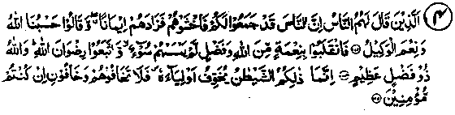
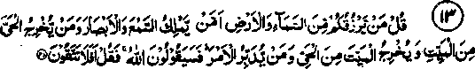
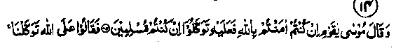
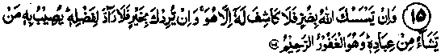
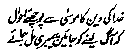

Chapter Six
Section (c)
Ayaat on Tawakkul and Deprecation of Begging
On the subject of ‘Tawakkul, many more Traditions have been given in the following pages, under Hadith one in the series of Ahadith on the foregoing subject. At this point, as usual, it is proposed to quote a few Verses from the Holy Qur’an, in which Allah Ta'ala exhorts His servants to put trust in Him and to turn to Him alone in all their needs. I have given only a few Verses, which typify many others of the same import. And, for the sake of brevity, I have omitted details and supplied suggestive hints (within parenthesis) in the translation of the text.
These Verses and Ahadith deserve our serious consideration and are worthy of concern for everyone who has any regard for Deen and about his future life, provided he can leave alone his idle worldly pursuits for a short while, to give thought to such important matters.
1. And in Allah alone should the Faithful (ever) put their trust. (Ale'Imran: 122)
The Ayat implies that the Mo’mineen should not at all put their trust in anyone other than Allah Ta'ala. There are frequent references to the subject in the Holy Qur’an and the same half Ayat has been repeated at various places e.g. in the Ayaat at Ale-Imran: 160, al-Ma’idah: 11, at-Taubah: 51, Ibrahim: 11, Al-Mujadilah: 10,' at-Taghabun: 13. which refer to the same theme.
2. Say: (O Muhammad) ‘All bounties (which include one's daily sustenance) are in the Hand of Allah. He grants them to whom He pleaseth. And Allah is All-Embracing (His bounties are unbounded), All-Knowing. (He knows how much should be granted to whom and at what time). And for the grant of His Mercy (and bounty). He (specially) chooseth whom He pleaseth. (For) Allah is the Lord of infinite bounties. (Aale’Imran: 73-74)
3. Verily Allah loves those who put (all) their trust (in Allah). (Aale-Imraan-59)
Note: How exalted is he who becomes the loved one of Allah Ta'ala Himself!
(These Ayaat refer to a particular incident that took place during the times of Rasulullah Sallallaho alaihe wasallam) Allah Ta'ala says:

4. Those unto whom men said, Lo! The people (your enemies) have gathered (arms, etc., to fight) against you: therefore, fear them. But the news (threat of war only) increased their Faith and they said, ‘Allah is Sufficient for us’ (Allah will suffice us as a Protector against all dangers). He is the best disposer of affairs. So they returned (from the expedition) with grace and bounty from Allah; no harm ever touched them. For, they followed the pleasure of Allah! And Allah is the Lord of infinite bounties. It is Shaitan who would make (men) fear his partisans. Be you not afraid of them, but fear Me, if you are true believers. (Aale-Imran: 173-175)
The Ayaat warn the believers that, in all such circumstances, when they hear the news of an impending attack by the enemy, they should not feel terrified. Instead, they should prepare for the enemy as best they can, keeping full trust in Allah Ta'ala and counting on His succour. Their only concern should be to guard themselves against such deeds as incur the displeasure of Allah Ta'ala; that alone can bring about their utter ruin in this world and eternal damnation (for sure) in the Akhirah. The believers should entertain no other fears. For, the worst harm that people threaten to do a person is to take his life, but death is preordained and it must come to everybody at its appointed time, which can neither be hastened nor put off.
5. And Allah is sufficient as a Protector and Allah is sufficient as a Helper. (an-Nisa: 45)
6. And put thy trust in Allah; and Allah is sufficient as Trustee. (an-Nisaa: 81)
1. So, in Allah put your trust, if you are Indeed believers (Mo’mineen). (al-Maidah: 23)
8. Say (O Muhammad), shall I take for my protector anyone other than Allah, the Originator of heavens and the earth? And He, it is that, feedeth but is not fed (because He does not stand in need of being fed). (al-An‘aam: 14)
9. If Allah touch thee with affliction, there is none that can relieve thee from it except He. And if He touch thee with good fortune (there is none that can prevent Him from doing so), for He hath Power over all things. (al-An'aam: 17)
10. Whoso puts his trust in Allah (is often triumphant because), verily Allah is Almighty, Wise. (al-Anfaal: 49)
Note: And He exalts those who trust Him (above others). Sometimes, however, such people are not granted immediate success because the Divine Wisdom has ordained it so, for their ultimate benefit Remember, in all His actions, He is Wise.
11. And trust in Allah! For, He is the one that heareth and knoweth. (He listens to the invocations of His men and knows, better than anyone else, their circumstances). (al-Anfal: 61)
12. When an affliction toucheth a man, he crieth unto Us (in all postures) while reclining on his bed, on his side or sitting or standing. But when We have relieved him of the trouble (out of Mercy over his weeping and crying), he passeth on his way (in proud unconcern) as if he had never cried unto Us for (relieving) a trouble that touched him. (This is height of folly). (Yunus: 12)

13. Say (unto them, O Muhammad), Who is it that grants you your sustenance from the sky and from the earth? Or, Who is it that has power over hearing and sight? And Who is it that brings forth the living from the dead and the dead from the living? And, Who is it that rules all things? They will (definitely) say: ‘Allah’. Then say: ‘Will you not then fear Him and keep your duty unto Him? (why do you, then, feel afraid of any other being). (Yunus: 31)

14. And Musaa said (to his people): ‘O my people! If you do (sincerely) believe in Allah, then in Him put your trust, if you have indeed surrendered to Him. They said (in reply), ‘In Allah we put our trust’. (Yunus: 8485)

15. If Allah afflicts you with some hurt, there is none can remove it but He. If He desires some good for thee, there is none can keep back His favour. He causeth it to reach whomsoever of His servants He pleaseth. And He is the oft-Forgiving. Most Merciful. (Yunus: 107)
16. There is no creature (beast) on earth but its sustenance dependeth on Allah. (So, everybody should ask for his sustenance from Him alone). (Hood: 6)
17. Say (O Muhammad), He is my Lord (my Sustainer). There is no God but He! In Him do I put my trust and unto Him is my recourse. (ar-Ra‘d: 30)
18. They (whose good qualities have been recounted in the preceding Verses) are those who persevere patiently (in afflictions) and put their trust in their Lord. (They do not feel worried as to the sources from where they will get their daily provisions of food, etc., after they have made Hijrah). (an-Nahl: 42)
19. No power has he (the Devil or Shaitaan) over those who believe and put their trust in their Lord (provided that, in their trust and belief in Allah, they ' are true to the core). (an-Nahl: 99)
20. And We gave Musaa the Book (the Torah), and made it a (source of) guidance to the children of Israel, saying ‘Take none other than Me as your Guardian’. (Bani Israel: 2)
21. And when distress (tempests, etc.) touches you on the sea, all unto whom you cry (for succour), besides Himself, foil you. But when He brings you safe to land, you turn away (from Him). True, man has ever been ungrateful. (Bani Israel: 67)
22. They have no protecting friend other than Him: nor does He share His command with any person (or group of persons) whatsoever, (al-Kahf: 26)
23. He calls on such deities (worships them) besides Allah, as can neither hurt nor profit him; that is straying for indeed (from the Right Path). (al-Hajj: 12)
24. And put thy trust in the living One (Allah) Who dieth not. (al-Furqaan: 58)
25. And Who gives me food and drink; And when I am ill, it is He Who cures me. (ash-Shura: 79-80)
26. And put your trust in Him Who is Exalted in Might (Allah), the Merciful. (ash-Shura: 217)
27. Then seek thy sustenance from Allah (as He is the sole sustainer for all), worship Him and be grateful to Him. To Him will be your return (on the Day of Resurrection). (al-Ankabut: 17)
28. And how many an animal there is that carries not its own sustenance. It is Allah Who feeds (both) them and you. (And He alone is worthy of trust). For, He hears and knows (all things). (al-Ankabut: 60)
29. And put your trust in Allah; enough is Allah as a Trustee. (al-Ahzab: 3)
30. Say (O Muhammad), who is he who can preserve you from Allah if it be His wish to give you punishment (harm or loss of any type); or (who can prevent Him) if He intends to grant you Mercy (If all the people were to unite to prevent Him, they could not do so). Remember, they will never find for themselves, besides Allah, any protector or helper, (al-Ahzab:17)
31. Is not Allah sufficient (as Defender) for His servant? (az-Zumar: 36)
32. Say (O Muhammad): "See you then? The things that you invoke (worship) besides Allah, can they, if Allah wills some hurt for me, remove His hurt? or, if He wills some grace (bounty) for me, can they restrain His grace?" Say: "Sufficient is Allah, for me!
In Him do trust (all), those who put their trust, (az-Zumar: 38)
33. Such is Allah, my Lord; in Him do I trust and to Him do I turn (for help in all my needs). (ash-Shura: 10)
34. Gracious is Allah to His bondsmen; He gives sustenance to whom He pleases (and as much as He pleases) and He is the Powerful the Mighty, (ash-Shura: 19)
35. Nor have you, besides Allah, anyone to protect or to help. (ash-Shura: 31)
36. But that which is with Allah is Car better and more lasting for those who believe and put their trust in their Lord. (ash-Shura: 36)
37. And in heaven is your sustenance, as (also) that which you are promised (that Is to say your sustenance is pre-destined and recorded in the Lauhe-Mahfooz). (Az-Zariyat: 22)
38. (So prayed Ibrahim): Our Lord, in Thee do we trust and to Thee do we turn (for help in all our needs); to Thee is our final goal (on the Day of Resurrection). (al-Mumtahanah: 4)
39. They are the ones (the hypocrites or ‘Munafiqeen’) who say, spend nothing on those who are with Allah’s Rasul so that (for fear of starvation) they may disperse. (The fact is that the hypocrites have no sense. Don’t they know that) to Allah belong the treasures of the heavens and the earth; but the hypocrites understand not. (They foolishly think that the sustenance of the believers depend upon what they give them in Sadaqah). (al-Munafiqun: 7)
40. And for those who fear Allah, He (ever) prepares a way (out of danger to safety; out of difficulty to ease and comfort). And He provides for him from (sources) he never could imagine. And if anyone puts his trust in Allah, Sufficient is Allah for him. For, Allah will surely accomplish His purpose. Verily, for all things, has Allah set a measure. (at-Talaq 2 - 3)
Note: The Verses allude to an incident related in the following pages under Hadith one of the series of Ahadith (on ‘Tawakkul’).
41. I e is the Lord of the East and the West; There is i one to be worshipped but He. Take Him alone, therefore, as your Defender and Trustee, (al-Muzzammil: 9)
The forty-one Ayaat quoted above should serve as a sample of many others with similar meanings. As a matter of fact, (in a vaster sense) the entire subject-matter of the Holy Qur’an comprises exhortations to cultivate a firm belief in the Oneness of Allah Ta'ala (Tauheed). And, as ‘Tawakkul’ is the essence of ‘Tauheed’, the more firmly grounded anybody is in his belief in "Tauheed’ the more advanced will he be in ‘Tawakkul’ and the more averse to seeking the help of anyone other than Allah Ta'ala (in hours (rf need). It is well-known that when Ibrahim Alaihissalaam the friend of Allah, was going to be put into the fire, Jibrael Alaihissalaam came and implored him thus: "I am at your service and ready to do your bidding if there is aught I can do for you". Ibrahim Alaihissalaam replied, "No, I don’t need your help in any matter". (Ihya-ul-Uloom)
It is said that once a Dervish went into a Masjid and sat there with the intention of observing ‘I‘tikaaf. He had no provision of food or drink with him. The Imaam of the Masjid advised him that as a destitute person, it was better for him not to observe I‘tikaaf; he should rather do some job to earn his daily bread. The Dervish made no reply; the Imaam again insisted that he should go and earn his living, but he remained silent After the Imaam had repeatedly asked him to do so for the third and the fourth time, the Dervish said, "Beside the Masjid, there is a shop owned by a Jew, Who has promised to send me two loaves of bread everyday". The Imaam said, "If he has promised to provide you food, it is well and good. Then you may observe ‘I‘tikaaf. The Dervish reprimandingly said, "It would be far better if you did not lead the prayers; with such a weak faith in ‘Tauheed’, how can you dare to lead the prayers? You have great reliance on the promise made by an unbelieving Jew but you put little trust in the promise made by Allah Ta'ala to provide sustenance (to all living things). (Raudh)
The Ayaat quoted above deserve our serious consideration. We should try our utmost to keep in mind only Allah Ta'ala, at all times, expecting His favours. We should have absolute confidence in Him and ask Him alone for help in all our needs. We should beg Him alone and should, in no circumstances, ask any person for anything. Rather we should not even think, in our minds, of asking for anything from anyone other than Allah Ta'ala. We should make Him—and Him alone—our sole resort for seeking help in hours of need, believing from the core of our heart that Allah Ta'ala alone can do us good or harm. We often talk in such words about our faith and trust in Allah Ta'ala, but what is really needed is a firm belief that neither kings nor the rich can do us any harm or grant us any favour, unless Allah Ta'ala wills it so.
We may remind ourselves about this obvious fact that the hearts of all men all over the world are controlled by Allah Ta'ala. However humbly we entreat someone, he will not be moved (because his heart is not in his own control) unless He, in whose Hands the hearts of all men are, wills it so. If, on the other hand, Allah Ta'ala, who reigns over the hearts of all men, decrees it to happen, He will inspire the hearts of men to accept what we say. And whatever disregard we may show to a person, he will be obliged to listen to us, because of the promptings from within. So, it is Allah Ta'ala alone whose help should be sought in the hour of need. And it is His Court alone where we should ever bow in humility and submit our entreaties. His will reigns supreme over the hearts of all men, all over the world. He is the Sovereign Lord of all the treasures of the world. O, Allah! grant me, by virtue of your Infinite Bounties and without my deserving it, something of this essential (the invaluable) quality of Tawakkul. For, your favours are bestowed both upon those who deserve and upon those who are unworthy of your bounty. An Urdu poet says:

"Go and ask Musaa Alaihissalaam how bountiful the rewards are of Allah Ta'ala. For he went to fetch fire, but Lo! There (on the Mount) he was granted ‘Nabuwwat’from Allah Ta'ala."
Here, I would like to quote a few Ahadith (with brief explanatory notes) on the subjects contained in the foregoing Ayaat